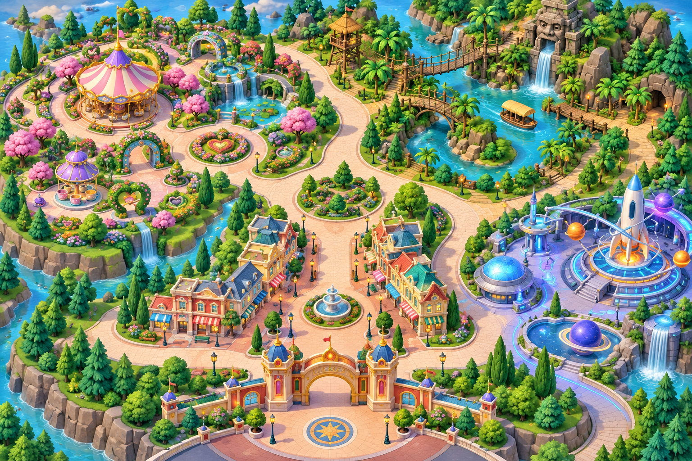

小學四年級 · 中文寫作
跟着腳步，把景物寫活！
先選定三個感興趣的園區，再逐站寫下看到、聽到和感受到的事物。
步移法口訣移動 → 定位 → 觀察 → 感受
任務一
0 / 3哪一句運用了步移法？
任務二
已選 0 / 3 區先選定遊覽區域
用方向鍵控制小旅客，由六個園區自由選擇三個。這一頁不用寫句子。

🏘️小鎮大街
🎠幻想世界
🌿探險世界
🚀明日世界
❄️魔雪奇緣世界
🐻灰熊山谷
🧒🏻
從入口出發！走近發光圓圈。
無法控制小人物？改用點選景點
我的步移路線
任務三
第 1 / 3 站一步一景寫作站
三個園區已選定，現在每站完成一小段。
觀察鏡頭想不到才逐級開啟提示
現在來到
寫作小提示
任務四
組合文章，請AI教練提點
教練只會指出改善方向，精彩內容仍由你創作。